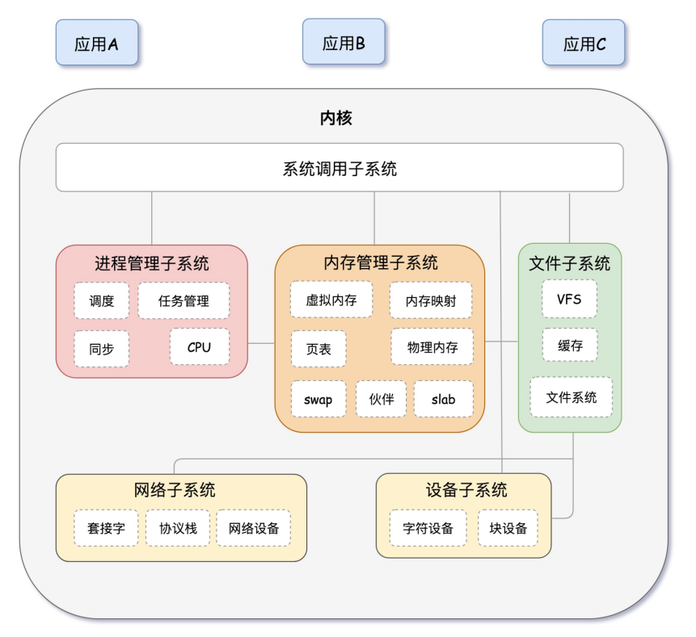
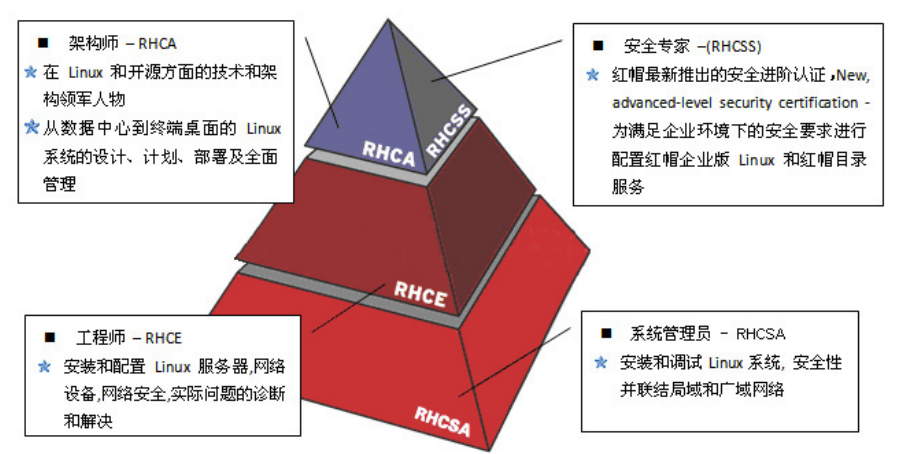

Linux基础
操作系统简介
一台机器往往有不同的零件组成，一台电脑也是由很多不同的硬件组成，这么多的硬件设备，就需要有 一个系统去代替我们管理好，这个就是操作系统。
操作系统需要完成的任务很简单，就是去学习每个硬件的不同使用方法，专业的术语叫“安装驱动程 序”，当操作系统学会了每个硬件的使用方法之后，就会以某种人类可以操作的方式来被人类使用，有的 操作系统是图形化界面的，我们可以鼠标点击来操作，有的是命令行的，我们需要输入命令来操作，不 管是哪种方式，最终都是让计算机硬件来为我们而工作。

Linux操作系统
不同的人对计算机有不同的操作习惯，不同的使用场景对操作系统有不同的挑战，所以当前就出现了多 种多样的操作系统
Windows
- 收费闭源操作系统，主要用于日常办公、游戏、娱乐多一些
Linux
- 免费的，开源的，主要用于服务器领域，性能稳定，安全
Unix
- 用于封闭的硬件环境，企业的应用依赖于定制化开发
Linux图谱
Linux发展到今天出现了大量不同的分支。不同的分支都有不同的发展方向，可以扫描下面二维码，查看 Linux发现分支图
Linux名词
Linux系统内核指的是一个由Linus Torvalds负责维护，提供硬件抽象层、硬盘及文件系统控制及多 任务功能的系统核心程序。
Linux发行套件系统是我们常说的Linux操作系统，也即是由Linux内核与各种常用软件的集合产品
RedHat认证
redhat是目前全球最大的Linux商业公司，redhat为Linux技术工程师提供了一个考试认证，通过这个考 试认证的工程师，可以获得redhat公司颁发的证书
在行业内，redhat的技术证书还是占有很高的含金量的，证书的认证难度依次如下

RHCSA
管理文件、目录、文档以及命令行环境；
使用分区、LVM逻辑卷管理本地存储；
安装、更新、维护、配置系统与核心服务；
熟练创建、修改、删除用户与用户组，并使用LDAP进行集中目录身份认证；
熟练配置防火墙以及SELinux来保障系统安全。
RHCE
熟练配置防火墙规则链与SElinux安全上下文；
配置iSCSI（互联网小型计算机系统接口）服务；
编写Shell脚本来批量创建用户、自动完成系统的维护任务；
配置HTTP/HTTPS网络服务；
配置FTP服务；
配置NFS服务；
配置SMB服务；
配置SMTP服务；
配置SSH服务；
配置NTP服务。
自动化运维工具ansible
RHCA
欲取得红帽RHCA认证，您必须通过以下任意5门认证考试。
| 考试代码 | 认证名称 |
|---|---|
| EX210 | 红帽OpenStack 认证系统管理员考试 |
| EX220 | 红帽OpenStack 认证系统管理员考试 |
| EX236 | 红帽混合云存储专业技能证书考试 |
| EX248 | 红帽认证 JBoss管理员考试 |
| EX280 | 红帽平台即服务专业技能证书考试 |
| EX318 | 红帽认证虚拟化管理员考试 |
| EX401 | 红帽部署和系统管理专业技能证书考试 |
| EX413 | 红帽服务器固化专业技能证书考试 |
| EX436 | 红帽集群和存储管理专业技能证书考试 |
| EX442 | 红帽性能调优专业技能证书考试 |